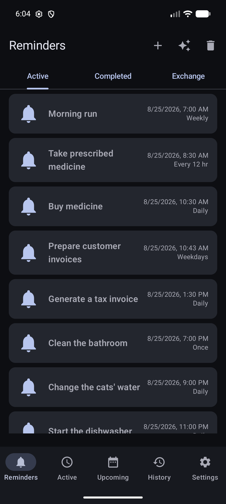
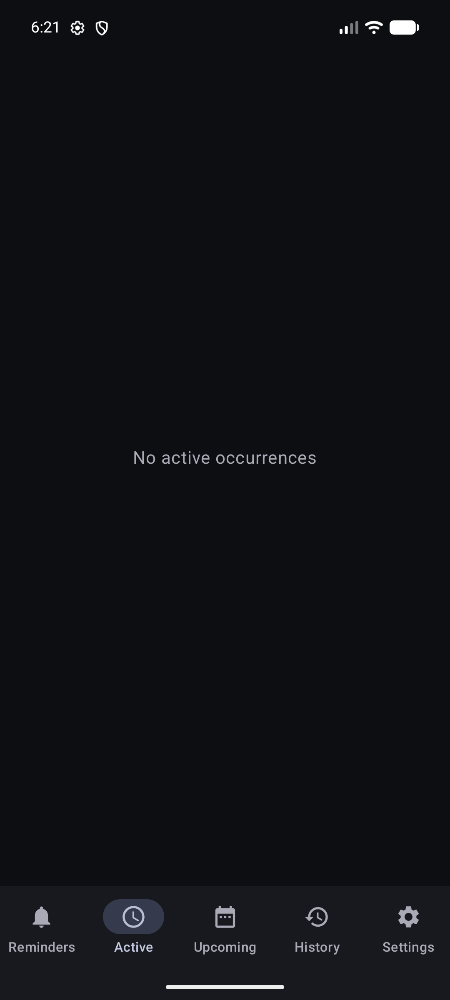
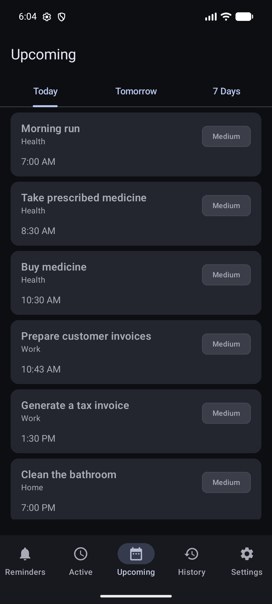
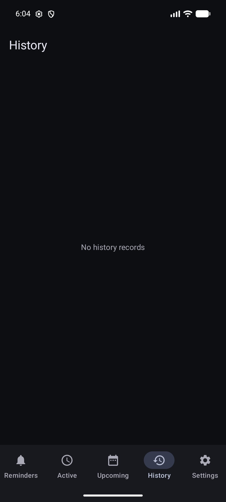
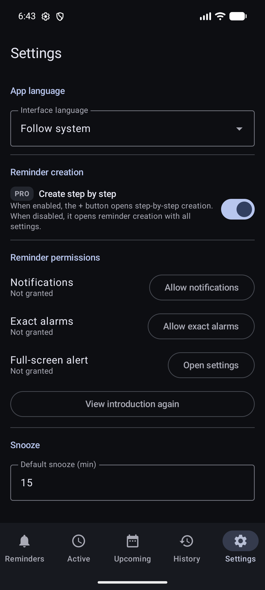

App overview
Know what DKReminder is showing you.
DKReminder is a reminder manager, not a list of unrelated alarms. One reminder can create many scheduled alerts while keeping one title, schedule, and set of options.
See the app
Choose a section to see what it contains





A reminder is the rule; an alert is one scheduled event
Keeps the title, recurrence rule, importance, alert settings, lists, and other options. Pausing or completing it affects whether the rule creates future alerts.
One concrete notification shown at a scheduled time. Marking it Done or snoozing it normally acts on that alert, not on the whole recurring reminder.
Example: a reminder called “Water the plants” can run every three days. Each scheduled date is a separate alert. Marking today's alert Done does not complete the recurring reminder.
The five main sections
Manage reminder rules. Use the Active and Completed tabs, open reminder details, create a new reminder, or open Trash.
Handle alerts that currently need attention, have been snoozed, or were paused. This is about concrete alerts, not the full reminder catalog.
Preview the next scheduled points calculated from current reminder rules. It helps you check a schedule; it is not a second history list.
Review alerts that already occurred and their result, including Done, no response, snooze details, or closure after a reminder change.
Control app-wide defaults, reminder permissions, creation preferences, data tools, language, and Pro access.
What Upcoming shows
Upcoming is a calculated preview of scheduled alerts from your active reminders. Each item shows the reminder title, its group when one is assigned, its importance, and the calculated time. Select an item to open that reminder.
Shows times later than the current moment through the end of today.
Shows only the next calendar day, from its beginning through its end.
Shows the rolling period from now through the same time seven days later. It includes the rest of today and all matching times within that period.
If an expected time is missing
- Save the reminder first. Upcoming uses the saved schedule, not unsaved editor changes.
- Check that the reminder is active. Paused, completed, and deleted reminders are not included.
- Check the selected period, active window, start boundary, end date, and occurrence limit. Any of these can place the next time outside the list.
- For an interval counted from your response, DKReminder cannot calculate the next time while the current alert is still waiting for your response.
- A manual daily cycle has no future times until you start that day's cycle.
- For a very frequent reminder, Upcoming shows the first 100 calculated times from that reminder. Later times can be outside the preview even when they fall within seven days.
If the schedule is correct here but the real alert does not appear, follow If an alert does not appear.
Completed reminders, deleted reminders, and processed alerts
Completed reminders
Open Reminders → Completed. A completed reminder no longer creates new scheduled alerts, but remains available for review. Create again opens an independent draft; it does not reactivate or modify the archived reminder.
Trash
Open Trash from the Reminders screen. Deleting a reminder moves it there instead of immediately erasing it. Restoring it returns it in a paused state so you can review the schedule before starting it again.
History
History stores concrete alerts and keeps a snapshot of the reminder as it looked at that time. This lets an old record remain understandable even if the source reminder was edited, completed, or moved to Trash.
Where to go next
- To make a schedule, open Creating and recurrence.
- To respond to an alert or understand its state, open Alerts and actions.
- If alerts do not appear, open If an alert does not appear.
Still need help?
Email reminder@dvkworks.com and tell us which section or item you cannot find.